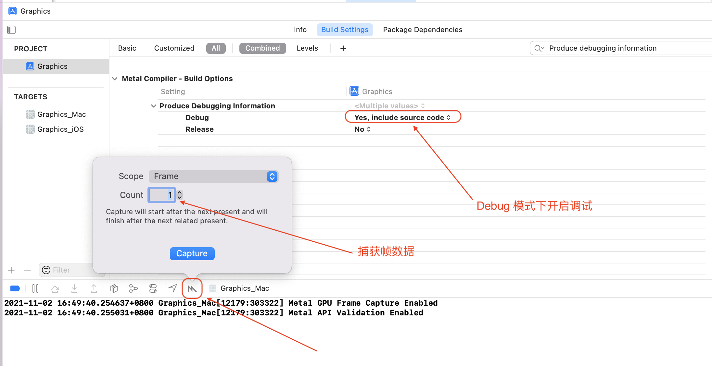
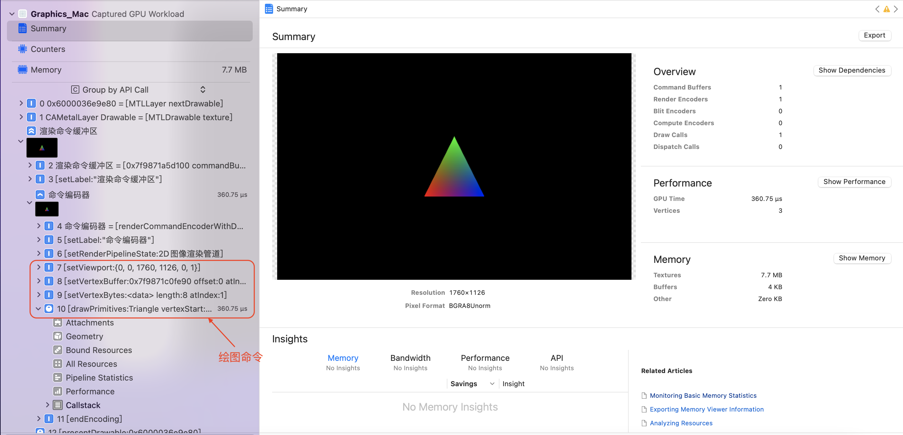
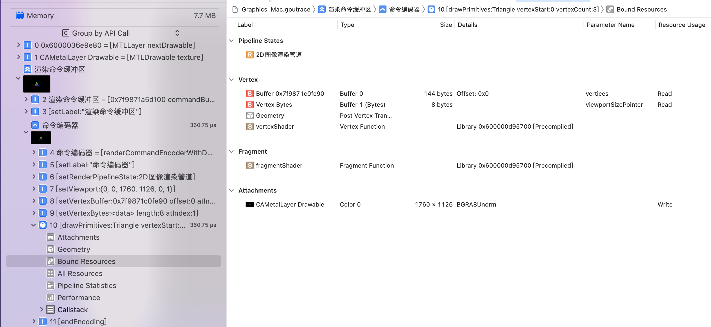
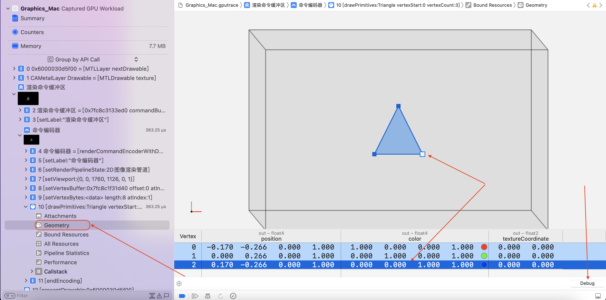
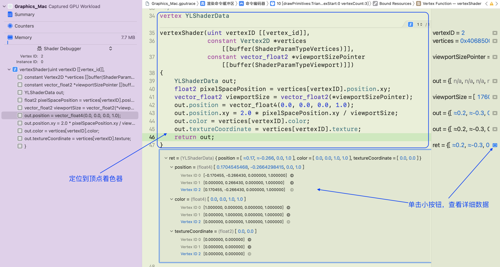
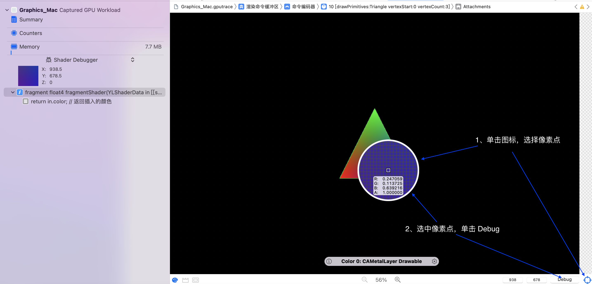
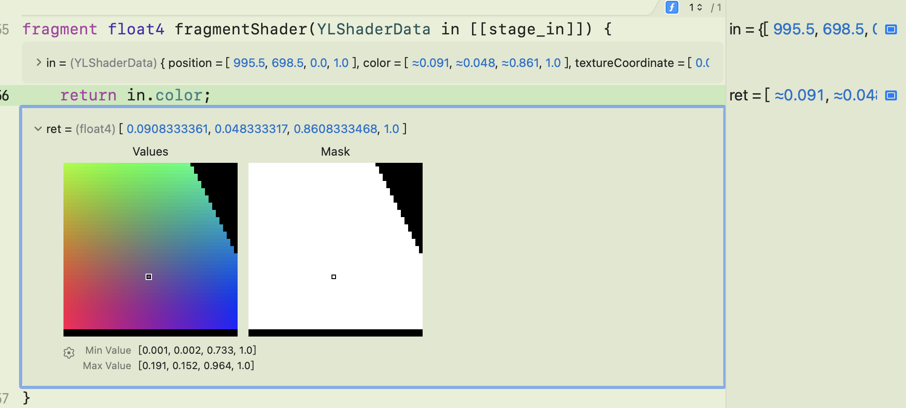

调试 Metal 代码
1、使用 Metal Debugger 调试 Metal
Xcode 通过帧捕获工具专门为 Metal 提供调试器：
- 可以通过
Metal Debugger了解计算机如何运行 Metal 代码； - 查找异常的渲染问题；
1.1、项目启用 Metal Debugger
在 Metal 渲染项目中，进入构建设置并更改 Metal 编译器选项 Produce debugging information :
- 将 Debug 设置为
Yes, include source code，以便调试着色器代码； - 将 Release 设置为 No，因为线上版本不应包含调试信息；

1.2、捕捉一帧数据
Metal Debugger 与 Xcode 的 Metal 帧捕获功能结合使用：
- 首先运行 Metal 代码，进入渲染界面；
- 然后单击 Xocde 调试工具栏上的
M图标
1.3、检查绘图命令
Xcode 捕获绘制命令以及程序中进行的所有其他函数调用，并将它们显示在 Debug 导航器中；如下图所示：

在命令编码器中查看渲染命令，该组命令是 Metal 为创建三角形而执行的命令：
- Xcode 记录了对设置视口、渲染管道、顶点着色器的参数、以及图元绘制命令的调用；
- 单击
Bound Resources查看绘制的详细信息：Vertex、Fragment和Attachment等！

1.4、检查顶点数据与顶点着色器
- 单击
Geometry查看顶点数据，Xcode 在几何查看器中渲染顶点输出的线框； - 在其下方，Xcode 在表格中列出了相同的数据；
- 单击线框中的一个顶点，Xcode 会在表中选择其对应的行；
- 单击表中的某一行，Xcode 会选中线框中的对应顶点；
通过以这种方式检查顶点信息，确保在视觉上和数字上，顶点输出看起来是正确的:
- 检查顶点坐标、顶点色值、顶点纹理等，确保数据正确；

如果渲染的一个或多个顶点在不正确的位置或颜色处渲染，则问题可能是由顶点着色器的错误引起的。要检查这种可能性，选择一个顶点并单击右下角的debug 按钮定位到着色器代码:

- 当代码打开时，确保它是要执行的顶点着色器，否则可能是使用了错误的渲染管道、或者在渲染管道配置了错误的顶点着色器！
- 在每一行代码的右边，调试器显示 GPU 执行到该行时计算和存储的值；单击某一行的最右侧图标，Xcode 显示多个顶点的计算值！
- 比较同一帧中顶点着色器处理的所有顶点数据，这样做可能会发现不一致，表明顶点着色器代码或输入数据中存在错误。
1.5、检查片段着色器
- 单击
Attachments查看片段着色器如何处理特定片段； - 移动鼠标查看具体某个像素；

- 单击
debug按钮，Xcode 会定位到片段着色器 - 如果定位的着色器代码不是要执行的代码，可能是使用了错误的渲染管道、或者在渲染管道配置了错误的片段着色器！
- 在每一行代码的右边，调试器显示 GPU 执行到该行时计算和存储的值；单击某一行的最右侧图标，Xcode 显示为此像素返回的颜色的可视化！

如果片段着色器中有更多行，可以以类似的方式检查这些行，以了解每行如何影响输出像素颜色。